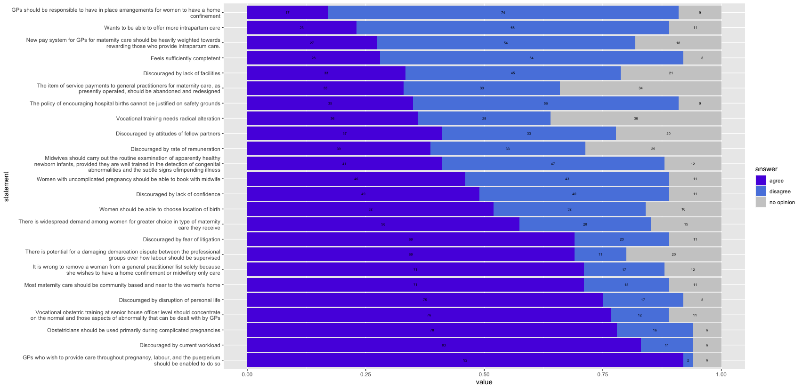

Unit 5
COLLABORATIVE DISCUSSION - INITIAL POST
Dear Editor,
Please see below an updated representation of the survey data on GPs in intrapartum care. I have chosen a blue scale colouring to avoid any confusion in persons with colour blindness. Optionally, we could replace the statements with placeholder values such as Q1, Q2, Q3… etc. I further appreciate that the graph is still of size, and if desirable we can split this up into sections into three such as “most agreed”, “spreaded opinions”, and “most disagree”.
However, from the current graph it becomes immediately clear that there is an overwhelming agreement that GPs should be able to provide intrapartum care if they wish to do so. Furthermore, GPs are discouraged by their current workload and mostly agree obstetricians should only be used during complicated pregnancies. This is in line with the 71% to 18% for the statement that maternity care should be community based.
On the other end of the graph we can see that only few (17%) of GPs agree that it is they who should be responsible with only 23% wanting to offer intrapartum care.
In terms of service payments, vocational training, and rate of remuneration, the opinions are divided into near equal parts of agree, disagree, and no opinion.
It seems to me that overall, GPs have no interest in providing more intrapartum as they expect their quality of work and life to decrease.

REFLECTION
It was a bit of a learning curve of plotting graphs with this data independently, rather than following along with examples. I worked with several plotting functions such as barplot() and likert(), before settling on ggplot() with `geom_col`.
It took me a long time and lots of trial and error to figure out how to order the plot in the way I have now ordered it. However after experimenting with different libraries and functies I feel like I have certainly learned a lot from this exercise.